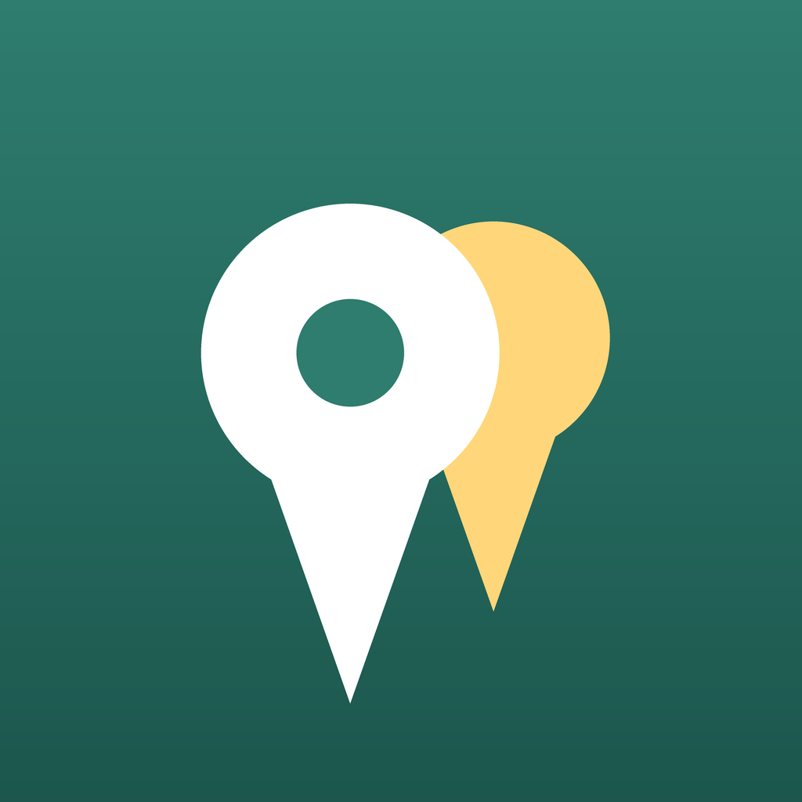

友だちが実際に行った店だけが、地図に並びます。
招待した人にしか見えないので、遠慮のない一言が書けます。
※ 現在開発中です
レビューサイトを開いて、そのまま閉じた経験はありませんか。
知らない誰かの★4.0と、味の好みを知っている友だちの「ここは値段の割に微妙だった」。 判断に効くのは、たいてい後者です。
イイトコ は、その一言を地図の上に置いておくためのアプリです。
記録するのも、探すのも、数タップで終わります。
自分と友だちの記録がピンで並びます。カテゴリと特徴で絞り込めます。
地図に出ているお店をタップ、評価を選べば記録完了。写真やメモは後から足せます。
都道府県 → 市区町村 と絞って、写真つきの一覧で見られます。旅行先を決めるときに。
デート向きひとり飯 静か・落ち着くコスパ◎ 個室あり といった軸で、目的から探せます。
同じ店に何度行ったかが残ります。「3回 / 最終 7月20日」のように。
自分の記録はいつでもCSV / JSONで書き出せます。退会すればすべて削除されます。
見えるのは、招待コードでつながった相手だけ。
不特定多数に見られる心配がないので、本音が書けます。 この制限はアプリの作りだけでなく、データベース側でも強制しています。 グループ外の人には1件も表示されません。
合わない相手が入ってしまったときは、グループの作成者がいつでも外せます。
カフェ・美術館・ホテル・観光地も、同じように記録できます。
「週末に行った美術館」も「去年泊まった宿」も、同じ地図の上に残ります。 友だちが旅行先で記録した場所を、地域からたどって探せます。